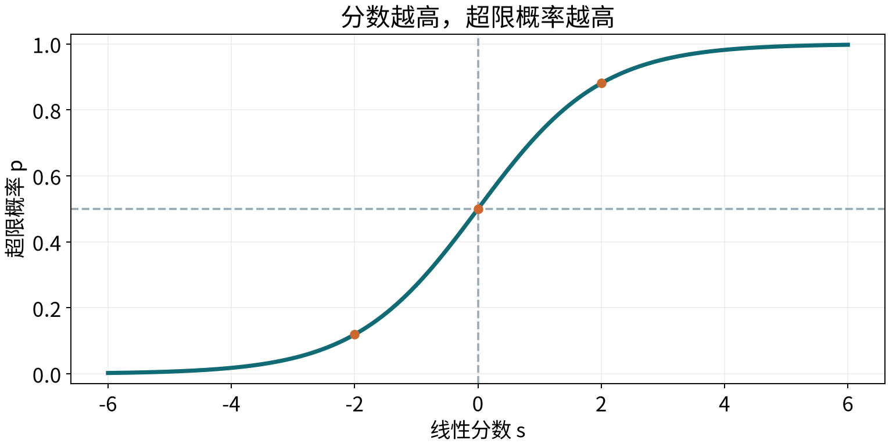
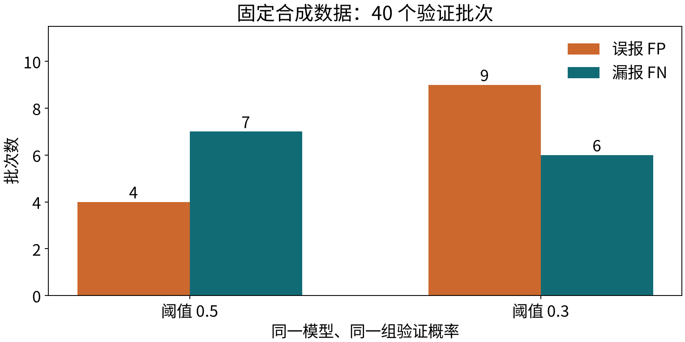

T05 · 机器学习 · 共同理论 · 2 学时
输入 → 线性分数 → 超限概率 → 阈值决定类别 → 标签核对
| 条件 | 本章任务 |
|---|---|
| 预测时点 | 批次开工前 |
| 可用输入 | 已确定的计划负荷、已取得的环境资料 |
| 真实标签 | 完工后判断：正常 0、超限 1 |
| 概率输出 | 模型估计的超限概率 |
0 和 1 是类别编码；0.8 不是“部分超限”的实际状态。
取 ，输入为 。
分数可以为任意实数，还不是概率，也不是类别。

同样的分数变化，不会处处带来同样的概率变化。
纸笔 A · 独立计算后核对
给定 ，。
| 固定概率 | 阈值 | 预测类别 |
|---|---|---|
| 0.75 | 0.5 | 1 |
| 0.75 | 0.8 | 0 |
只改变阈值，参数、分数和概率都不必改变。
纸笔 B · 两个阈值都使用同一个模型
| 样本 | 实际 | |||
|---|---|---|---|---|
| 1 | 1 | 0.9 | 待填 | 待填 |
| 2 | 0 | 0.6 | 待填 | 待填 |
| 3 | 1 | 0.4 | 待填 | 待填 |
| 4 | 0 | 0.2 | 待填 | 待填 |
分别统计 TP、FP、FN、TN；哪一个样本改变类别？
| 样本 | 实际 | ||
|---|---|---|---|
| 1 | 1 | 1 | 1 |
| 2 | 0 | 1 | 1 |
| 3 | 1 | 0 | 1 |
| 4 | 0 | 0 | 0 |
：TP=1，FP=1，FN=1，TN=1。
：TP=2，FP=1，FN=0，TN=1。
| 阈值 | 精确率：TP / (TP+FP) | 召回率：TP / (TP+FN) |
|---|---|---|
| 0.5 | 1/2 | 1/2 |
| 0.3 | 2/3 | 1 |
本例只新增一个真正例，因此精确率也提高；这不是降低阈值的普遍保证。
实际超限 → 少一次漏报；实际正常 → 多一次误报。
固定概率下降低阈值：漏报不增，误报不减；也可能都不变。
精确率不保证单调变化。是否降低阈值，还要考虑代价和复核能力。
实际标签 ，两个概率分别为 0.6、0.9。
概率从 0.60 变成 0.61，类别与错误数可能不变；类别错误数通常不能提供有效的局部梯度信息。
把给真实类别的概率记为 ：
单个样本的损失：
是自然对数；真实类别得到的概率越小，损失越大。
| 给真实类别的概率 | （约值） |
|---|---|
| 0.9 | 0.105 |
| 0.8 | 0.223 |
| 0.5 | 0.693 |
| 0.2 | 1.609 |
| 0.1 | 2.303 |
时，真实类别概率是 0.1，损失约为 2.303。
保留 ； 保留 。
每个概率要与同一个样本的标签对应。
纸笔 C · 所需对数值已给出
已知 ，。
| 真实标签 | 超限概率 | 真实类别概率 | 单样本损失 |
|---|---|---|---|
| 1 | 0.8 | 0.8 | 0.223 |
| 1 | 0.2 | 0.2 | 1.609 |
| 0 | 0.8 | 0.2 | 1.609 |
对 ，平均损失约为 0.223。
固定标签和概率，只改阈值，交叉熵保持不变。
当前参数 → 分数 → 概率 → 交叉熵 → 梯度 → 更新参数
给出一个组合导数：
：负导数方向提高分数；：负导数方向降低分数。
将 threshold 从 0.5 改为 0.3，再改为 0.8；先预测类别和损失怎样变化。
静态核对：阈值 0.3 时类别为 [1,1,1,0]，FP=1、FN=0；阈值 0.8 时为 [1,0,0,0]，FP=0、FN=1。两者损失均为 0.540271。

固定合成模型的 40 个验证批次；是实际预运行结果，不是纸笔四行例子。只改阈值，没有重新拟合。
模型估计为 0.8，不证明该批次真实风险已经确定为 80%。
可以观察许多预测约为 0.8 的对象，实际超限比例是否也接近 80%。
阈值若依据验证结果选择，选择后的指标不是独立最终测试。
| 量 | 含义 | 怎样改变 |
|---|---|---|
| 分数 | 输入与参数计算的线性输出 | 改输入或参数 |
| 概率 | 对正类的概率估计 | 由分数转换 |
| 类别 | 按阈值作出的判断 | 概率或阈值改变 |
训练优化概率损失；决策还要考虑漏报与误报。
纸笔 D · 5 分钟 · 独立作答
某批次 ，阈值从 0.5 改到 0.3，实际 。
机器学习 · T05